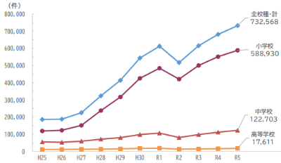
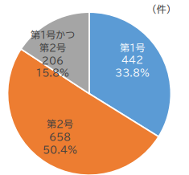

日本の不登校について
不登校が学校等で起きている中で
どのような原因があるのかを考察した
チーム名
名前
不登校が学校等で起きている中で
どのような原因があるのかを考察した
チーム名
名前

資料1）

資料2）
医師偏在指標
259.7
全国20位（全国平均に近い）
しかし、県内では大分市など中部への医師集中が顕著
| 地域 | 病院数 | 病床数 |
|---|---|---|
| 中部（大分市含む） | 62 | 9,062（約50%） |
| 南部 | 8 | 1,167 |
| 豊肥 | 6 | 827 |
| 地域 | 他圏域への流出率 | 他圏域からの流入率 |
|---|---|---|
| 豊肥 | 37.30% | 5.70% |
| 西部 | 36.70% | 9.40% |
| 中部 | 6.80% | 16.70% |
病気そのものだけでなく、移動や滞在が新たな負担に
友人の祖母が体調不良で杵築市の病院を受診
→ 「異常なし」と診断
→ 別府市の病院で再検査
→ 脳梗塞と判明
医師個人の責任ではなく...
限られた医療設備や少ない症例経験の中で
診断を下さなければならない構造的な問題
都会に医師が集中し、医療技術が都会の中で発展する
→ 居住地による医療格差が発生
地方で医学部進学を目指せる教育機会が少ない
地方に行くメリットがない
→ この2つを解決することが持続可能な地域医療への道
9年間の地方勤務が義務
→ 義務年限後に都市部へ戻るケースが多い
「義務だから仕方なく」地方にいる
→ 長期的な定着につながらない
居住地に関わらず、医師志望者が十分な教育を受けられるように
医学部での学費負担をなくす
卒業後の地方勤務を給与・キャリア・労働環境の面で魅力的に
この3つの柱により、
地域医療に興味のある人が自らの意思で地方を選ぶ環境を作る
医学部の学費（6年間）
数千万円
医学部6年 + 初期研修2年 + 義務9年 = 17年
18歳入学 → 35歳で義務終了
医学部6年 + 初期研修2年 + 義務5年 = 13年
18歳入学 → 31歳で義務終了
医師のライフイベント（出産・キャリア選択）を考慮
「我慢して行く場所」→「選びたくなる場所」へ
医師偏在指標
全国45位
（医師少数県）
誰もが住む場所に関係なく
適切な医療を受けられる未来へ
急な連絡にもかかわらず、
レポートに関する質問にお答えいただいた
済生会新潟県央基幹病院 麻酔科
新潟県地域医療支援センター
キャリアコーディネーター（医師）
中西理 様
（大分大学医学部地域枠2期生）
また本レポートの添削指導をしてくださった
田中芳政先生、白石はるか先生、難波将太先生
その他ご協力いただいたすべての方に
心から感謝申し上げます